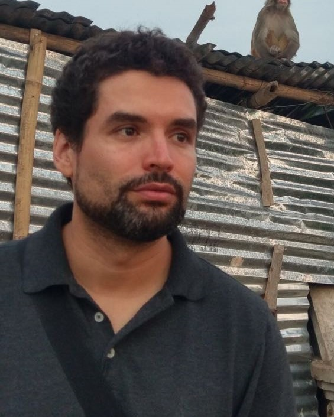
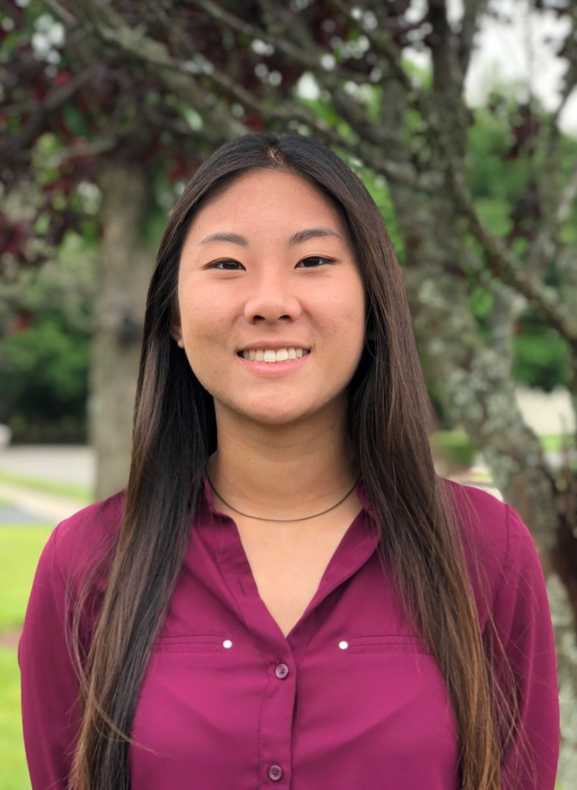
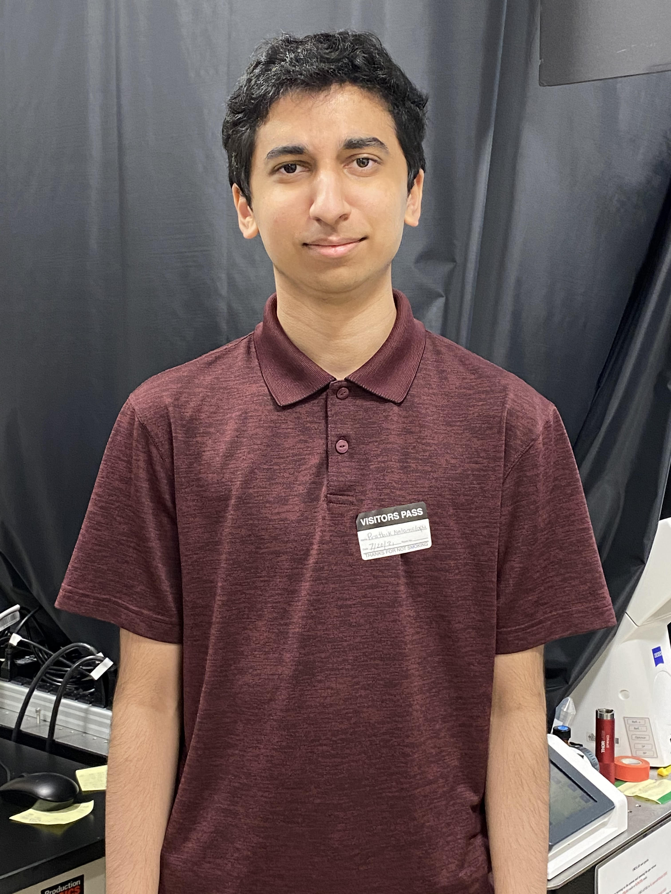

current members

|
PhD in Physical Chemistry, Massachusetts Institute of Technology Principal Investigator [minibio] Research interests: Cancer metastasis, cancer malignancy Cell surface receptor-intracellular organelle crosstalk Membrane lipid biophysics Single molecule biophysics, super-resolution microscopy, statistical analysis |
|  |
PhD in Physics, Université Pierre et Marie Curie, Laboratoire de Physique et Étude des Matériaux - Paris, France Senior Research Associate MSc, Fundamental and Applied Physics | Université Paris-Sud, Laboratoire Aimé Cotton - Orsay, France. MSc, École Polytechnique, Laboratoire d'Optique Appliquée - Palaiseau, France | 2005 BSc, Physics | Universidad de Los Andes - Bogotá D.C., Colombia | 2004 Postdoctoral training: Postdoctoral Scholar | Optical Imaging Tools: Heart Dysfunction, University of California, Los Angeles | 2009-2012 |
|  |
Undergraduate Student in Physics, George Washington University Undergraduate Student Physics | George Washington University, Washington, DC | 2018- |
|  |
Thomas Jefferson High School for Science and Technology High School Summer Intern (Summer 2021) |